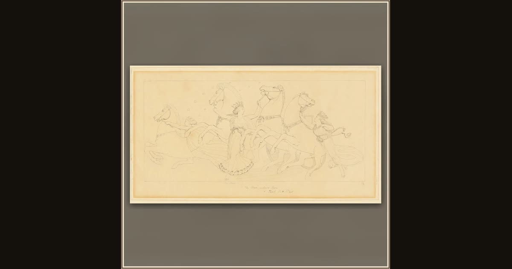

The Hours Taking the Horses from Juno's Car
John Flaxman, II · n.d. · Art Institute of Chicago
The Hours unharness Hera’s horses and lead them to their mangers (8.432–434). Explore its place in Homer's Iliad, Book VIII, line 433.

John Flaxman, II · n.d. · Art Institute of Chicago
The Hours unharness Hera’s horses and lead them to their mangers (8.432–434). Explore its place in Homer's Iliad, Book VIII, line 433.